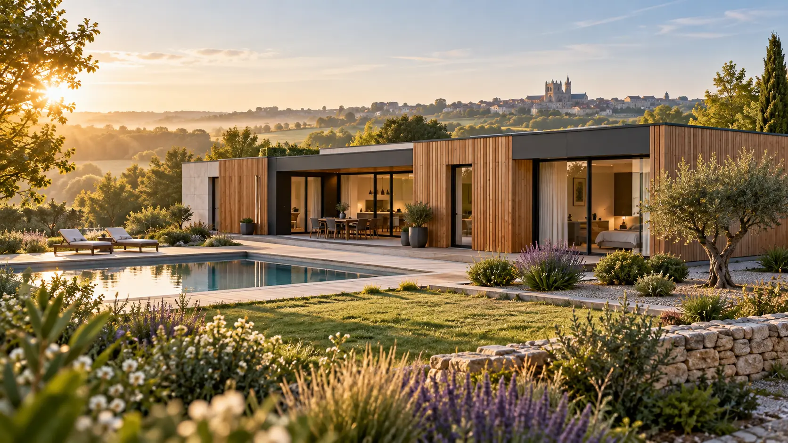
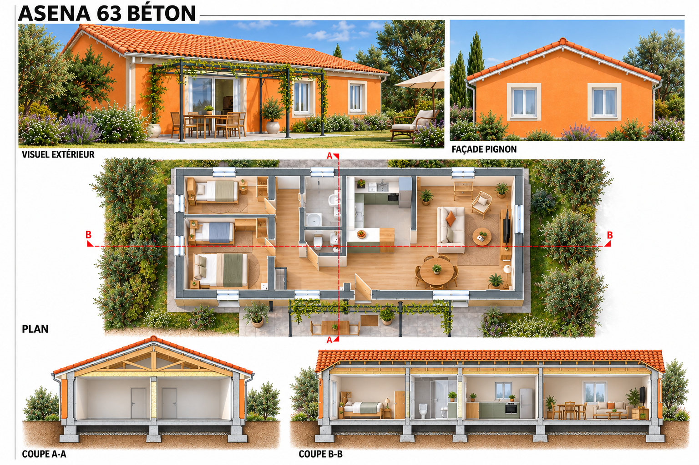
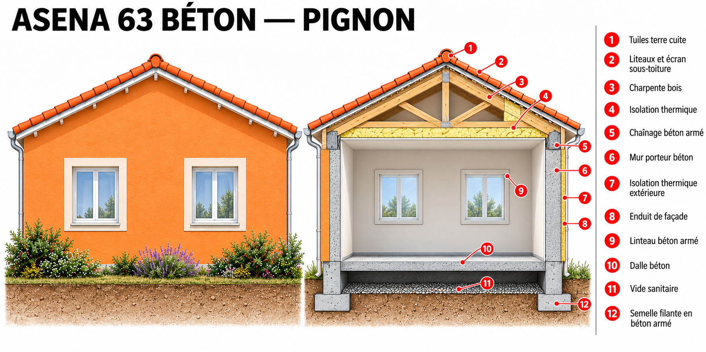
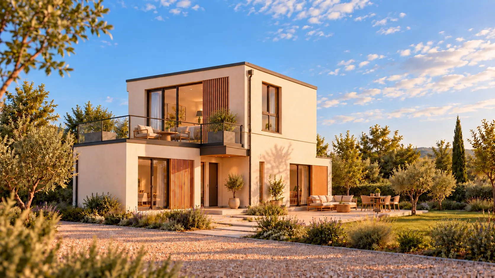
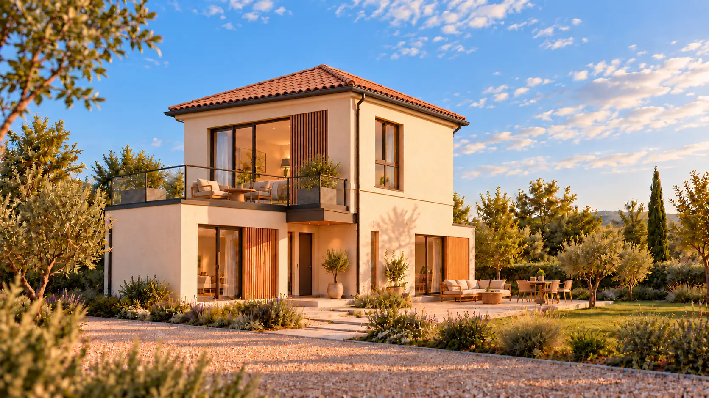

Gamme Essentielle

Constructeur à Poitiers & dans la Vienne
Une maison pensée autour de votre vie.
Des maisons personnalisables en construction traditionnelle, béton hybride ou structure métallique, pensées pour votre terrain : du premier plan jusqu’à la remise des clés.
01 Trois systèmes constructifs
02 Plans personnalisables
03 Préfabrication maîtrisée
ASENAMODUL
La solidité du béton, avec une méthode de construction plus maîtrisée.
ASENAMODUL développe des maisons à partir de composants en béton préfabriqué. La structure est étudiée et préparée en atelier, pendant que les fondations et les réseaux avancent sur le terrain. Le plan, les façades et la toiture restent adaptés à votre projet.
Comprendre notre méthode →Votre point de départ
Commencez par ce que vous avez déjà.
Un modèle, un plan, un terrain ou simplement une idée : chaque situation mène vers le bon niveau d’étude.
01
Je cherche un modèle
Parcourir les surfaces, architectures et variantes de toiture.
Voir le catalogue 02J’ai déjà un plan
Étudier son adaptation en traditionnel, béton hybride ou métallique.
Adapter mon plan 03Je compare les systèmes
Comprendre les avantages et les points de vigilance de chaque solution.
Comparer les solutions 04Je veux cadrer mon budget
Identifier les prestations, les exclusions et les facteurs de prix.
Comprendre les prestationsNos gammes
Une base claire, un plan qui reste le vôtre.
Choisissez une gamme selon votre surface et vos usages. L’implantation, les ouvertures et les finitions sont ensuite adaptées au terrain et aux règles locales.
Gamme Familiale
Confort au quotidien
Environ 80 à 130 m²Plain-pied ou étage, 2 à 4 chambres, garage et espaces évolutifs.Gamme Signature
Volumes et architecture
À partir de 130 m²Grandes baies, patio, terrasse, balcon et composition entièrement étudiée.EXEMPLE DE CONSTRUCTION
ASENA 63 BÉTON
Un exemple de maison de plain-pied en béton : visualisez à la fois son organisation intérieure et les principaux éléments de construction.


Illustrations de principe : les dimensions, fondations, isolations et équipements sont adaptés à chaque terrain et projet.
Concept original ÉLÉA 112
Deux variantes de toiture pour une maison R+1.
ÉLÉA 112 est une étude ASENAMODUL originale. Le toit-terrasse de l’aile basse est accessible depuis le premier étage. La couverture du volume principal peut être plate ou réalisée en charpente traditionnelle avec tuiles.

Variante 01Toit plat
ÉLÉA 112 TERRASSE
Une maison R+1 avec toit plat sur le volume principal et terrasse accessible au-dessus de l’aile basse.
- Environ 112 m²
- 3 chambres + bureau
- Terrasse au premier étage

Variante 02Charpente et tuiles
ÉLÉA 112 TRADITION
Le même principe R+1 avec charpente traditionnelle sur le volume principal et terrasse conservée sur l’aile basse.
- Environ 112 m²
- 3 chambres + bureau
- Couverture en tuiles
Images d’intention non contractuelles. Dimensions, fondations, levage, assemblages et ferraillage soumis aux études architecturales et structurelles.
ASENA MODUL SYSTEM
Une plateforme constructive hybride, adaptée à chaque projet.
Le principe n’est pas d’imposer une boîte unique. Selon le plan et l’accès au terrain, la maison combine des modules volumétriques en béton et des panneaux structurels préfabriqués. Les composants sont préparés en environnement contrôlé puis assemblés sur des fondations réalisées sur place.
Objectif : conserver la solidité et l’inertie du béton, tout en industrialisant les détails répétitifs et en laissant une vraie liberté architecturale.
Structure adaptable
Modules 3D pour les volumes compacts ; murs, façades et planchers 2D préfabriqués pour les grandes pièces et les portées ouvertes.
Noyau technique
Cuisine, salles d’eau, gaines et réseaux sont regroupés et coordonnés tôt pour simplifier les raccordements et la maintenance.
Enveloppe performante
Isolation continue, étanchéité à l’air et traitement précis des jonctions. Enduit, bardage, parement ou combinaison selon le projet.
Toiture indépendante
Toit plat contemporain ou charpente avec tuiles : le kit de toiture s’adapte au plan, au climat et aux règles d’urbanisme locales.
En atelier
Fabriquer avec des points de contrôle
- Moules, ferraillage et réservations
- Coulage, cure et contrôle dimensionnel
- Isolation, menuiseries et pré-équipement selon le niveau de finition
- Traçabilité avant départ
Sur le terrain
Préparer pendant la fabrication
- Terrassement, fondations et réseaux
- Plan de transport, accès et levage
- Pose, calage et assemblages structurels
- Étanchéité des jonctions, raccordements et essais
Niveaux de livraison
Choisissez jusqu’où nous vous accompagnons.
Le périmètre exact est détaillé dans la notice descriptive et le chiffrage du projet. Aucun poste n’est supposé ou caché.
Structure
Prêt à aménager
- Structure béton assemblée
- Toiture et enveloppe définies au contrat
- Menuiseries selon la formule retenue
- Second œuvre réalisé par le client ou ses entreprises
Intermédiaire
Prêt à finir
- Maison close et couverte
- Isolation et doublages selon la notice
- Réseaux techniques préparés
- Revêtements et équipements à personnaliser
Accompagnement complet
Clé en main
- Coordination des lots prévus
- Cuisine et salles d’eau selon sélection
- Revêtements et peintures définis
- Essais, contrôles et réception
La base standardisée
Trame structurelle, assemblages, noyaux techniques, contrôles et séquence de pose.
Vos choix personnalisables
Plan intérieur, ouvertures, façade, toit plat ou tuiles, équipements et niveau de finition.
Les surfaces présentées constituent des familles de projets, pas des offres tarifaires. Chaque maison fait l’objet d’une étude de faisabilité, d’une conception réglementaire et d’un devis adaptés au terrain.
Comparer précisément les prestations et les travaux à prévoir →Votre projet
La méthode ASENAMODUL, en huit étapes.
- 01
Terrain et faisabilité
Urbanisme, sol, accès des convois, emplacement de la grue et raccordements.
- 02
Programme et budget
Surfaces, usages, niveau de finition, variantes et enveloppe financière.
- 03
Architecture et autorisations
Plan adapté, insertion, permis, étude énergétique RE2020 et études nécessaires.
- 04
Conception pour fabriquer
Découpage 3D/2D, structure, assemblages, réservations et maquette de coordination.
- 05
Production contrôlée
Fabrication des éléments avec contrôles aux points clés définis pour le projet.
- 06
Chantier en parallèle
Fondations, réseaux et préparation du levage avancent pendant la préfabrication.
- 07
Transport et assemblage
Livraison séquencée, levage, fixation, toiture et fermeture des jonctions.
- 08
Essais et réception
Raccordements, contrôles, finitions, documents d’entretien et remise des clés.
Le procédé définitif est arrêté projet par projet avec l’architecte, les bureaux d’études et les entreprises compétentes. Les performances, délais et coûts ne sont confirmés qu’après études du terrain, de la structure, de la réglementation, du transport et du levage.
Transparence du projet
Ce qui est présenté, et ce qui doit encore être validé.
Des concepts pour se projeter
Architectures, surfaces cibles, distributions indicatives, systèmes possibles et niveaux de livraison.
Une solution réellement adaptée
Implantation, urbanisme, sol, structure, énergie, transport, levage, raccordements et calendrier.
Un périmètre avant engagement
Plans validés, notice descriptive, prestations, exclusions, prix, délais, intervenants, assurances et garanties applicables.
ASENAMODUL distingue volontairement les images d’intention, les avant-projets et les documents contractuels. Une maison n’est proposée à la construction qu’après les validations professionnelles nécessaires.
Premier échange
Parlons de votre future maison.
Vous avez un terrain, une idée ou simplement besoin d’un premier avis ? Présentez-nous votre projet.